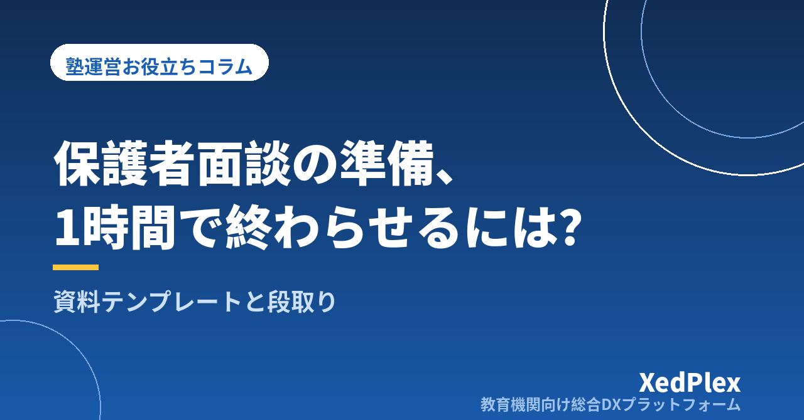

面談シーズンが近づくと、授業が終わったあとの教室でひとり、生徒ごとの資料づくりに追われる——個人塾の塾長なら、身に覚えのある光景ではないでしょうか。1人分に30分かかれば、生徒20人で合計10時間。日中は授業と保護者対応で手いっぱいですから、準備はどうしても夜や休日にずれ込みます。
しかも面談は、準備した資料の出来がそのまま塾への信頼に直結する場でもあります。手を抜くわけにはいかない。かといって、面談のたびに睡眠時間を削っていては、肝心の授業の質が落ちてしまいます。
けれども、面談準備が大変なのは「丁寧にやっているから」だけが理由ではありません。多くの場合、準備のやり方そのものに、時間がかかる構造があります。この記事では、面談資料を型に落とし込み、1人あたりの準備を1時間以内で終わらせるための考え方と段取りを、個人経営・小規模塾の実務に合わせて解説します。
準備に何時間もかかっている塾には、たいてい次の3つのどれか（あるいは全部）が当てはまります。
逆に言えば、型を決める・データを1か所に集める・目的を絞るの3つが揃えば、準備時間は大きく削れます。順番に見ていきましょう。
最初に決めたいのは資料の書式ではなく、面談の目的です。おすすめは、面談を「成績の報告会」ではなく「次の一手を家庭と合意する場」と定義し直すことです。
報告だけなら、紙の成績表を渡せば済みます。わざわざ保護者に時間を取ってもらう面談の価値は、「現状はこうです。だから塾はこうします。ご家庭にはこれをお願いしたい」という役割分担の合意にあります。ここが決まると、資料に載せるべき情報は「合意に必要な材料」だけに絞られ、準備も面談本番も短くなります。
目的が決まったら、資料は次の4部構成のテンプレートに固定してしまいましょう。どの生徒でも同じ型を使うことで、「構成を考える時間」がゼロになります。A4で1〜2枚あれば十分です。
| セクション | 載せる内容 | 準備時間の目安 |
|---|---|---|
| 1. 学習の事実 | 出席状況、宿題の提出率、授業中の様子など、記録から転記できる事実 | 10分 |
| 2. 成績の推移 | 直近テストの得点と平均点、前回からの変化。数字は2〜3個に絞る | 10分 |
| 3. 本人の声・家庭に聞きたいこと | 本人が話した目標や困りごと、家庭での様子について確認したい質問 | 10分 |
| 4. 今後の提案 | 次のテストまでの塾側の方針＋家庭へのお願い1つ | 20分 |
並び順にも意味があります。事実 → 解釈 → 提案の順に話すと、保護者は納得しながら聞けます。いきなり「もっと勉強させてください」から入ると、根拠がないため防御的な反応を招きがちです。
もうひとつのポイントは、「手元用のメモ」と「渡す資料」を分けて作らないことです。テンプレートをそのまま保護者に見せながら話し、そのまま渡せる体裁にしておけば、資料は1種類で済みます。見栄えを整える時間は、内容を考える時間より価値が低いと割り切りましょう。
成績のセクションは、順位や他の生徒との比較よりも、本人の前回比と平均点との位置関係を軸にすると前向きな話がしやすくなります。日頃の成績の記録の付け方は、別記事「塾の成績管理の方法｜紙とエクセルから卒業する5つの手順」で詳しく解説しています。
テンプレートが決まれば、1人分の準備は次の段取りで1時間に収まります。
| 時間 | やること |
|---|---|
| 0〜15分 | 材料を1か所に集める。出欠・宿題・成績・過去の連絡内容を机の上（または画面上）に揃える。ここでは判断せず、集めることに徹する |
| 15〜30分 | テンプレートに事実を流し込む。セクション1〜3を埋める。文章にせず箇条書きでよい |
| 30〜50分 | 「今後の提案」を書く。並んだ事実を眺めると、提案は自然に絞られてくる |
| 50〜60分 | 読み返しと想定問答。保護者から聞かれそうな質問を2〜3個想定し、答えをメモしておく |
コツは、提案から書き始めないことです。先に事実を並べれば提案はすぐ決まりますが、先に提案を考えると、それを裏付ける材料探しに時間が溶けていきます。
また、複数人分をまとめて準備する時期は、「材料集め」だけを全員分先に済ませてしまう方法も有効です。同じ種類の作業をまとめて行うほうが、1人ずつ完結させるより速く終わります。
タイムテーブルの最初の15分、「材料を1か所に集める」時間は、実は日頃の記録の仕方しだいでほぼゼロにできます。面談準備の大半は、新しく何かを作る作業ではなく「思い出す作業」だからです。
材料になるのは、成績だけではありません。入退室の記録からは通塾の安定度が、欠席連絡の履歴からは家庭の状況の変化が読み取れます。「最近、水曜の欠席が増えていますが、部活の予定が変わりましたか？」というひと言は、こうした日常の記録からしか出てきません。そして保護者は、こういう細部を見てくれている塾にこそ安心感を持ちます。
授業ごとの指導記録、出欠、テストの得点、保護者とのやりとりが生徒ごとに1か所にまとまっていれば、面談前にやることは「開いて眺める」だけになります。紙のファイルでもエクセルでも構いませんが、「生徒1人につき1ページ（1シート）」のように生徒単位で情報が集まる形にしておくのがポイントです。最近は、日頃の指導記録をもとに面談資料の下書き作成をAIが手伝ってくれる塾向けシステムもあります。
面談は、退塾を防ぐ保護者コミュニケーションの4つの接点のひとつでもあります。日常の通知や定期報告と面談がつながっていると、面談当日に「初めて聞く話」がなくなり、信頼につながります。詳しくは「退塾を防ぐ保護者コミュニケーションの仕組み」をご覧ください。
最後に、見落とされがちな「面談後」の話です。面談が終わった直後の10分で、次の3つを記録しておきましょう。
この記録があるだけで、次回の面談準備は「前回の記録を開いて、その後の変化を足す」だけになります。つまり、今回の面談後の10分が、次回の準備の最初の30分を肩代わりしてくれるのです。
面談準備は、頑張って速くするものではなく、型と記録の仕組みで自然に速くなるものです。次の面談シーズンが来る前に、まずは4部構成のテンプレートを1枚、作ってみてください。
コラム運営より
私たちは、個人経営・小規模の学習塾向けに、生徒管理・QRコードでの入退室記録・月次請求・保護者へのLINE/メール通知・AIによる学習支援までをひとつにまとめた教育機関向け総合DXプラットフォーム「XedPlex（ゼドプレックス）」を開発・提供しています。初期費用は0円、料金は生徒1名あたり月額300円（税込）から。生徒50名の塾なら月15,000円（税込）です。全国8つの教室で導入されており、導入塾には紹介ホームページの無料作成も行っています。機能の詳細説明はこちら。
XedPlexの詳細を見る